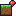
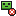

MEE 教師用パネル
教育版 Minecraft と接続します
1
教育版 Minecraft でワールドを開く
2
T
キーでチャットを開き、下のコマンドを入力
3
接続されると、この画面は自動で閉じます
コピー
接続を待っています
MEE Teacher Panel
ワールドから背景地図を生成
この PC に保存されているワールドのデータを読み、真上から見た地図を作ります。位置合わせは不要です。授業中に建てたものは、ゲームの自動保存の後に生成し直すと反映されます。
地図の白い部分は、ゲームがまだ保存していない場所です。ワールドを一度終了するか、自動保存の後に生成し直すと広がります。
ワールド
範囲
自動（保存済みの地形すべて・最大2048）
256×256 ブロック
512×512 ブロック
1024×1024 ブロック
2048×2048 ブロック（時間がかかります）
中心
先生の現在地
ワールドのスポーン地点
生成して使う
閉じる
背景画像の位置合わせ
A
B
点Aを指定
x
z
点Bを指定
x
z
保存して使う
キャンセル
MEE 教師用パネル
全員停止中
未接続
授業の進行
全員停止
全員集合
配布
カメラ
振り返り
飛行能力
ワールド整備

モブ削除
周囲50
水・マグマ消去
周囲15
位置マップ
背景
なし（グリッドのみ）
不透明度
ワールドから生成
画像から追加
削除
参加者
0
接続待ち…
チャット
生徒の発言はここに表示されます。
送信